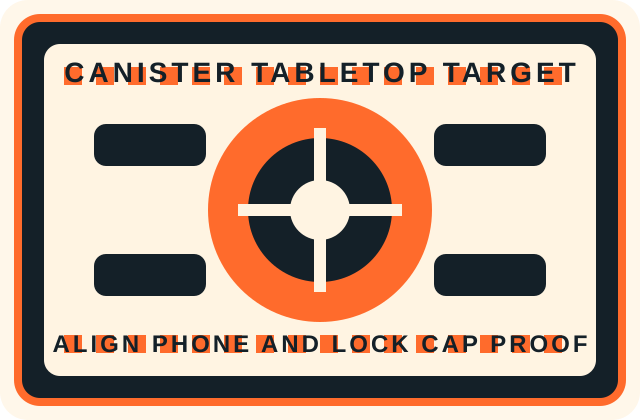

Before proof
Not captured
Real Physical Gigs
Phone-first worker guidance with proof capture for the tabletop canister task.
Camera preview will appear here.
Use the fallback anchor if browser permissions or AR SDKs are unavailable.
Worker flow
Canister cap secure confirmation
Turn clockwise to secure the cap.
Keep both the canister cap and the tabletop target card in frame before capturing proof.

Before proof
Not captured
After proof
Not captured
Worker proof flow
Generate a proof record after capturing before and after evidence.
Execution timeline
Session events will appear here.
Dashboard handoff
No proof record has been dispatched yet.
Dispatch a proof package to populate the dashboard handoff preview.
Verification loop
No verification result has been returned from the dashboard yet.
Dashboard verification updates will appear here.